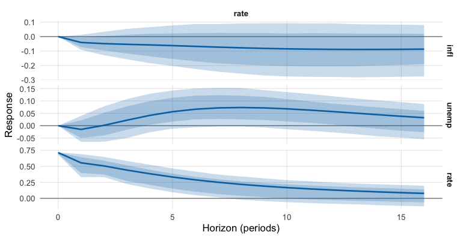
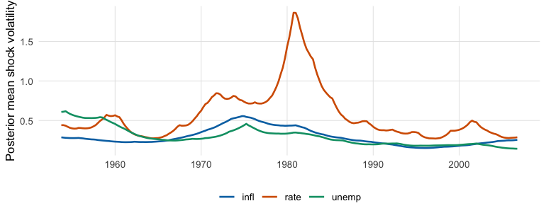
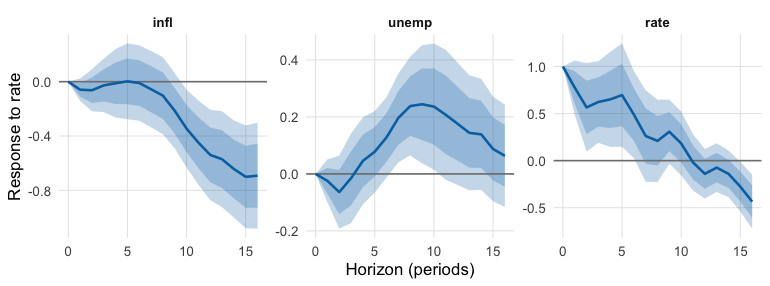

varm is a fast R package for frequentist and Bayesian vector autoregressions (VAR, BVAR, TVP-VAR with stochastic volatility), structural identification and local projections (LP). The estimators, bootstraps, MCMC samplers and identification loops run in compiled Rcpp/RcppArmadillo code. A 3-variable hierarchical BVAR draws 1000 posterior samples in about 0.1 s, a full 3-variable local projection takes about 0.4 ms, and results are checked against vars, BVAR, lpirfs, lm + sandwich and exact posteriors to between and Monte Carlo accuracy (see Validation and the validation report).
The design idea is one currency for uncertainty: the bootstrap, the asymptotic Monte Carlo and each Bayesian sampler return a varm_draws object of reduced-form draws . irf(), fevd(), hd() and forecast(), and every identification scheme (id_chol(), id_longrun(), id_sign(), id_given(), …) work on that object, so a new estimator inherits all identification schemes and a new identification scheme works with every estimator.
The package is experimental (version 0.1.0); see Limitations.
Installation
# install.packages("pak")
pak::pak("kvasilopoulos/varm")A C++ toolchain is required (the package compiles RcppArmadillo code). The reference implementations used in the tests (vars, BVAR, lpirfs, bsvars, sandwich, mvtnorm) are in Suggests.
Tidy by design
-
Tibbles with broom column names.
tidy(),glance()andaugment()(re-exported fromgenerics) return tibbles withterm,estimate,std.error,conf.low,conf.high,horizon,level.as_tibble()is an alias oftidy()for IRF, FEVD, forecast, historical decomposition, LP and Bayesian objects. -
tidyselect arguments. Every argument that names variables takes bare names, strings, positions or helpers:
lp(yraw, shock = rate, contemp = c(infl, unemp)),id_chol(order = c(infl, unemp, rate)),autoplot(ir, shocks = rate),varm(df, p = 2, vars = c(infl, rate)). -
ggplot2 for every result.
autoplot()returns aggplotfor VAR/BVAR IRF, FEVD, forecast and historical decomposition objects, draws, MCMC diagnostics, TVP-VAR paths and every local-projection result;plot()prints the same object. The figure is yours to modify with+. -
One theme and palette.
theme_varm()and the colour-blind-safevarm_palette()are used by all plots and available for your own. -
Pipe-friendly. The data or model is always the first argument and there is no hidden state:
yraw |> varm(p = 2) |> irf(horizon = 16) |> autoplot().
Thirty seconds with each family
All examples use yraw, three quarterly US series (inflation infl, unemployment unemp, interest rate rate; Koop and Korobilis, 1953Q1-2006Q3). Each ends in an autoplot() figure and shows one tidy() and one glance() call.
VAR: impulse responses with bootstrap bands
library(varm)
fit <- varm(yraw, p = 2)
fit
#> <varm> VAR(2) with 3 variables, 213 effective observations
#> logLik = -338.416; max |eigenvalue| = 0.946
#>
#> infl unemp rate
#> infl.l1 1.5378 -0.0095 0.5457
#> unemp.l1 -0.2809 1.3297 -0.6475
#> rate.l1 -0.0571 -0.0210 0.7766
#> infl.l2 -0.5418 0.0341 -0.4395
#> unemp.l2 0.2336 -0.4290 0.6730
#> rate.l2 0.0580 0.0457 0.1232
#> const 0.2872 0.3654 0.0052
tidy(fit, conf.int = TRUE)
#> # A tibble: 21 × 8
#> response term estimate std.error statistic p.value conf.low conf.high
#> <chr> <chr> <dbl> <dbl> <dbl> <dbl> <dbl> <dbl>
#> 1 infl infl.l1 1.54 0.0596 25.8 2.13e-66 1.42 1.66
#> 2 infl unemp.l1 -0.281 0.0622 -4.52 1.05e- 5 -0.403 -0.158
#> 3 infl rate.l1 -0.0571 0.0295 -1.93 5.45e- 2 -0.115 0.00112
#> 4 infl infl.l2 -0.542 0.0613 -8.84 4.41e-16 -0.663 -0.421
#> 5 infl unemp.l2 0.234 0.0592 3.95 1.09e- 4 0.117 0.350
#> 6 infl rate.l2 0.0580 0.0291 2.00 4.72e- 2 0.000715 0.115
#> 7 infl const 0.287 0.0955 3.01 2.96e- 3 0.0989 0.475
#> 8 unemp infl.l1 -0.00952 0.0643 -0.148 8.82e- 1 -0.136 0.117
#> 9 unemp unemp.l1 1.33 0.0670 19.8 1.09e-49 1.20 1.46
#> 10 unemp rate.l1 -0.0210 0.0318 -0.660 5.10e- 1 -0.0838 0.0418
#> # ℹ 11 more rows
glance(fit)
#> # A tibble: 1 × 8
#> K p nobs logLik AIC BIC HQ max_root
#> <int> <int> <int> <dbl> <dbl> <dbl> <dbl> <dbl>
#> 1 3 2 213 -338. 731. 822. 768. 0.946Responses to a policy-rate shock (recursive identification, rate ordered last), with 68% and 90% wild-bootstrap bands. autoplot(ir) without shocks gives the full shock-by-response grid:
set.seed(1)
ir <- irf(fit, id = id_chol(), horizon = 16, ci = "wild", nboot = 1000)
tidy(ir)
#> # A tibble: 306 × 7
#> response shock horizon estimate level conf.low conf.high
#> <fct> <fct> <int> <dbl> <dbl> <dbl> <dbl>
#> 1 infl infl 0 0.308 0.9 0.297 0.311
#> 2 unemp infl 0 -0.0117 0.9 -0.0204 0.0000663
#> 3 rate infl 0 0.0877 0.9 0.0505 0.104
#> 4 infl unemp 0 0 0.9 0 0
#> 5 unemp unemp 0 0.332 0.9 0.321 0.334
#> 6 rate unemp 0 -0.268 0.9 -0.285 -0.235
#> 7 infl rate 0 0 0.9 0 0
#> 8 unemp rate 0 0 0.9 0 0
#> 9 rate rate 0 0.715 0.9 0.681 0.719
#> 10 infl infl 1 0.472 0.9 0.410 0.497
#> # ℹ 296 more rows
autoplot(ir, shocks = rate)
BVAR with stochastic volatility
A triangular (equation-by-equation) Gibbs sampler with a Minnesota prior and stochastic volatility:
set.seed(1)
bfit <- bvarm(yraw, p = 2, prior = prior_triangular("minnesota"), sv = TRUE,
ndraw = 2000, nburn = 1000)
bfit
#> <bvarm> triangular-minnesota-sv BVAR(2), K = 3, 2000 posterior draws
#>
#> posterior mean of B:
#> infl unemp rate
#> infl.l1 1.2908 -0.0149 0.1870
#> unemp.l1 -0.1210 1.2135 -0.3127
#> rate.l1 -0.0022 -0.0097 1.0203
#> infl.l2 -0.2992 0.0483 -0.1303
#> unemp.l2 0.0739 -0.2804 0.2884
#> rate.l2 -0.0033 0.0231 -0.0959
#> const 0.3075 0.1943 0.3286
tidy(bfit)
#> # A tibble: 21 × 6
#> response term estimate std.error conf.low conf.high
#> <chr> <chr> <dbl> <dbl> <dbl> <dbl>
#> 1 infl infl.l1 1.29 0.0548 1.20 1.38
#> 2 infl unemp.l1 -0.121 0.0346 -0.177 -0.0632
#> 3 infl rate.l1 -0.00223 0.0168 -0.0299 0.0263
#> 4 infl infl.l2 -0.299 0.0563 -0.391 -0.207
#> 5 infl unemp.l2 0.0739 0.0329 0.0195 0.127
#> 6 infl rate.l2 -0.00335 0.0151 -0.0297 0.0203
#> 7 infl const 0.307 0.0843 0.165 0.445
#> 8 unemp infl.l1 -0.0149 0.0417 -0.0843 0.0530
#> 9 unemp unemp.l1 1.21 0.0544 1.12 1.30
#> 10 unemp rate.l1 -0.00968 0.0173 -0.0370 0.0193
#> # ℹ 11 more rows
glance(bfit)
#> # A tibble: 1 × 7
#> K p nobs ndraw method logml accept
#> <int> <int> <int> <int> <chr> <dbl> <dbl>
#> 1 3 2 213 2000 triangular-minnesota-sv NA NAautoplot(bfit, type = "coef") plots the coefficient posteriors, and volatility() returns the posterior-mean shock volatilities, which are one tidy()-style reshape away from a ggplot:
library(ggplot2)
vol <- volatility(bfit)
d <- data.frame(
quarter = rep(seq(1953.25 + 2 * 0.25, by = 0.25, length.out = nrow(vol)), ncol(vol)),
variable = rep(colnames(vol), each = nrow(vol)),
volatility = as.vector(vol)
)
ggplot(d, aes(quarter, volatility, colour = variable)) +
geom_line(linewidth = 0.8) +
scale_colour_manual(values = varm_palette(3)) +
labs(x = NULL, y = "Posterior mean shock volatility", colour = NULL) +
theme_varm()
The default prior of bvarm() is instead the conjugate hierarchical Minnesota prior of Giannone, Lenza and Primiceri (2015), with exact draws for the coefficients and a Metropolis step for the hyperparameters. Both return a bvarm object, and irf(bfit, id = id_chol()) works the same way as for fit.
Local projections
shock and contemp are tidyselect arguments (bare names, strings or c()); contemp lists the variables ordered before the shock, which reproduces the recursive identification used above.
lpf <- lp(yraw, shock = rate, contemp = c(infl, unemp), horizon = 16, lags = 2,
lag_augment = TRUE)
lpf
#> <lpm> local projection of infl, unemp, rate on 'rate', horizons 0..16 (3 lags, HC)
#> infl unemp rate
#> 0 0.0000 0.0000 1.0000
#> 1 -0.0590 -0.0243 0.7763
#> 4 -0.0117 0.0456 0.6506
#> 8 -0.1030 0.2381 0.2098
#> 12 -0.5391 0.1760 -0.1398
#> 16 -0.6921 0.0634 -0.4354
tidy(lpf)
#> # A tibble: 102 × 7
#> horizon response estimate std.error level conf.low conf.high
#> <int> <fct> <dbl> <dbl> <dbl> <dbl> <dbl>
#> 1 0 infl 4.85e-15 1.27e-13 0.9 -2.04e-13 2.13e-13
#> 2 1 infl -5.90e- 2 5.03e- 2 0.9 -1.42e- 1 2.37e- 2
#> 3 2 infl -6.31e- 2 9.43e- 2 0.9 -2.18e- 1 9.20e- 2
#> 4 3 infl -2.71e- 2 1.20e- 1 0.9 -2.24e- 1 1.70e- 1
#> 5 4 infl -1.17e- 2 1.54e- 1 0.9 -2.64e- 1 2.41e- 1
#> 6 5 infl 2.43e- 3 1.70e- 1 0.9 -2.76e- 1 2.81e- 1
#> 7 6 infl -9.90e- 3 1.69e- 1 0.9 -2.88e- 1 2.68e- 1
#> 8 7 infl -5.56e- 2 1.71e- 1 0.9 -3.37e- 1 2.26e- 1
#> 9 8 infl -1.03e- 1 1.72e- 1 0.9 -3.87e- 1 1.81e- 1
#> 10 9 infl -2.15e- 1 1.69e- 1 0.9 -4.92e- 1 6.27e- 2
#> # ℹ 92 more rows
glance(lpf)
#> # A tibble: 1 × 6
#> shock horizon lags se_type iv nobs
#> <chr> <int> <int> <chr> <lgl> <dbl>
#> 1 rate 16 3 hc FALSE 212
autoplot(lpf)
For the same shock the LP and VAR responses are close but not identical; compare_lp_var() quantifies it.
Features
Status column: validated = agrees with a named reference implementation or an exact result in the tests or validation/; tested = unit tests of correctness (against a hand computation, a simulation with known truth, or an invariant) but no external reference; new = recently added, documented, consistency-tested only. Details in the validation report.
| Method | Function | Reference | Status |
|---|---|---|---|
| Reduced-form VAR | |||
| OLS / Gaussian ML, constant, trend, exogenous terms | varm() |
Lutkepohl (2005) | validated vs vars (~1e-12) |
| Lag selection (AIC, HQ, SC, FPE) | var_select() |
Lutkepohl (2005) | validated vs vars::VARselect
|
| Companion-matrix stability | stability() |
Hamilton (1994) | validated vs vars::roots
|
| IRF, FEVD, forecasts |
irf(), fevd(), forecast()
|
Lutkepohl (2005) | validated vs vars
|
| Normalise a shock to a given size on a variable |
normalise_to(), irf(normalise = )
|
- | tested |
| Tidy output (tibbles), ggplot2 figures |
tidy(), glance(), augment(), autoplot(), theme_varm(), varm_palette()
|
broom conventions | tested |
| Historical decomposition | hd() |
Burbidge and Harrison (1985) | tested |
| Inference for VAR | |||
| Residual bootstrap, wild bootstrap (Rademacher, Mammen) |
draws(), irf(ci = )
|
Runkle (1987); Goncalves and Kilian (2004) | tested; coverage simulated (see Limitations) |
| Bootstrap-after-bootstrap bias correction | draws(bias_correct = TRUE) |
Kilian (1998) | tested; coverage simulated |
| Asymptotic Monte Carlo | draws(method = "mc") |
Lutkepohl (2005) | tested (OLS covariance); coverage simulated |
| Structural identification | |||
| Recursive (Cholesky) | id_chol() |
Sims (1980) | validated vs vars
|
| Long-run (Blanchard-Quah) | id_longrun() |
Blanchard and Quah (1989) | validated vs vars::BQ (~1e-13) |
| Sign restrictions, Haar rotations | id_sign() |
Uhlig (2005); Rubio-Ramirez, Waggoner and Zha (2010) | tested (exact Haar and acceptance laws) |
| Median-target (Fry-Pagan) rotation | irf_fry_pagan() |
Fry and Pagan (2011) | tested |
| User impact matrix | id_given() |
- | tested |
| Zero and sign restrictions (unweighted) | id_zerosign() |
Arias, Rubio-Ramirez and Waggoner (2018) | tested (zeros exact); importance weights not implemented |
| Short- and long-run zero (A-B) restrictions | id_restrictions() |
Blanchard and Quah (1989); Sims (1980) | tested (reproduces BQ and recursive schemes) |
| Identification through heteroskedasticity (two regimes) | id_hetero() |
Rigobon (2003) | tested (simulation) |
| Proxy-SVAR (external instruments) | |||
| Proxy identification, first-stage F |
id_proxy(), proxy_fstat()
|
Mertens and Ravn (2013); Stock and Watson (2012) | tested vs hand computation |
| Proxy bootstrap (wild, moving block) |
varm_proxy(), proxy_draws()
|
Jentsch and Lunsford (2019) | tested; wild bootstrap fails at impact (see Limitations) |
| Weak-instrument robust sets | varm_proxy_robust() |
Montiel Olea, Stock and Watson (2021) | tested (endpoints solve the Wald test) |
| Bayesian proxy-SVAR (limited information) | varm_proxy_bayes() |
after Caldara and Herbst (2019) | tested vs bootstrap; not their sampler |
| Bayesian proxy-SVAR with sign and reliability restrictions |
varm_proxy_arw(), id_proxy_bayes
|
Arias, Rubio-Ramirez and Waggoner (2021) | new; coverage simulated |
| Prior-robust Bayesian proxy-SVAR | varm_proxy_gkr() |
Giacomini, Kitagawa and Read (2022) | new; coverage simulated |
| Bayesian VAR | |||
| Conjugate NIW, Minnesota, sum-of-coefficients, single-unit-root priors |
bvarm(), prior_minnesota()
|
Litterman (1986); Doan, Litterman and Sims (1984); Sims (1993) | validated (analytic NIW moments; log posterior vs BVAR ~1e-13) |
| Hierarchical hyperparameters (optimiser + adaptive Metropolis) | bvarm() |
Giannone, Lenza and Primiceri (2015) | validated vs BVAR and exact quadrature |
| Triangular equation-by-equation sampler | bvarm(prior = prior_triangular()) |
Carriero, Clark and Marcellino (2019) | validated vs exact posterior (homoskedastic) |
| SSVS and horseshoe shrinkage priors | prior_triangular("ssvs" / "horseshoe") |
George, Sun and Ni (2008); Carvalho, Polson and Scott (2010) | tested (simulated sparse VAR) |
| Stochastic volatility (KSC mixture, FFBS) |
bvarm(sv = TRUE), volatility()
|
Kim, Shephard and Chib (1998); Carter and Kohn (1994) | validated (Geweke test); calibration slightly low |
TVP-VAR with stochastic volatility; tidy paths, autoplot(type = "coef"/"vol"/"irf")
|
tvpvar(), tvp_prior(), irf_path(), tvp_volatility()
|
Primiceri (2005); Cogley and Sargent (2005) | validated (constant limit vs OLS and GLS); prior-sensitive |
MCMC diagnostics (ESS, R-hat, Geweke; tidy(), autoplot()) |
mcmc_diagnostics() |
Vehtari et al. (2021); Geweke (1992) | validated (known AR(1) ESS) |
| Local projections | |||
LP, HAC (Newey-West) and HC standard errors, cumulative responses; tidyselect shock, contemp, responses
|
lp() |
Jorda (2005) | validated vs lm + sandwich (~1e-13) |
| LP-IV | lp(iv = ) |
Stock and Watson (2018) | validated vs manual 2SLS |
| Lag augmentation | lp(lag_augment = TRUE) |
Montiel Olea and Plagborg-Moller (2021) | tested |
Joint cross-horizon covariance, sup-t bands (tidy() gives pointwise and sup-t rows) |
lp_joint(), lp_supt()
|
Montiel Olea and Plagborg-Moller (2019) | tested; sup-t under-covers in simulation |
State-dependent LP (tidy() with state column, autoplot()) |
lp_state() |
Auerbach and Gorodnichenko (2012, 2013) | validated vs lpirfs::lp_nl (~7e-13) |
| Smooth LP | lp_smooth() |
Barnichon and Brownlees (2019) | tested (reproduces LP with no penalty) |
| Panel LP, fixed effects, clustered errors | lp_panel() |
Jorda (2005) | tested vs lm with dummies |
Direct LP forecasts (tidy(), autoplot()), LP versus VAR comparison |
lp_forecast(), compare_lp_var()
|
Plagborg-Moller and Wolf (2021) | tested |
Benchmarks
Seconds of elapsed time per 1000 retained posterior draws, simulated VAR(4) with , Apple M4 Pro, R 4.6.1, OpenBLAS, single-threaded (OMP_NUM_THREADS=1), nothing else running, installed package. Reproduce with Rscript validation/bayes.R s8.
| sampler | K = 3 | K = 7 | K = 20 |
|---|---|---|---|
bvarm() conjugate, fixed hyperparameters |
0.003 | 0.010 | 0.061 |
bvarm() conjugate, hierarchical (optimiser + 500 burn-in) |
0.054 | 0.177 | 1.271 |
bvarm() triangular, Minnesota, homoskedastic |
0.019 | 0.110 | 1.312 |
bvarm() triangular, Minnesota + stochastic volatility |
0.112 | 0.382 | 2.979 |
BVAR::bvar() (hierarchical ) |
0.157 | 0.259 | 0.899 |
bsvars::bsvar_sv() (structural SV) |
1.35 | 4.64 | not run |
Other timings on yraw (, , ):
| task | time |
|---|---|
tvpvar(), SV + time-varying + full , 10000 draws + 2000 burn-in |
about 8 s |
lp() for one shock, 3 responses, horizons 0-16 |
about 0.5 ms |
varm() OLS fit |
about 0.05 ms |
| 1000 wild-bootstrap draws of the VAR(2) | 0.02 s |
irf() with 1000 wild-bootstrap draws, horizon 16 |
0.03 s |
bvarm() hierarchical, 10000 draws + 2000 burn-in |
0.39 s |
bvarm() triangular + SV, 10000 draws + 2000 burn-in |
2.4 s |
Reading the table honestly: the conjugate samplers are very fast and the hierarchical one beats BVAR::bvar() for (about 2x), is level at , and is slower at (3.6 s against 1.6 s). The triangular samplers are a different model class (no BVAR counterpart); their cost rises from 0.05 s () to 5.7 s () in the homoskedastic case. tvpvar() is a long-running sampler: about 3 ms per sweep at , and the cost increases steeply with the lag length. Timings depend on the machine, the BLAS and the settings, and were measured in single runs.
Validation
Checks run live in the validation report; the longer ones are in validation/. The unit-test suite (tests/testthat) has 846 expectations and runs in about 17 s.
| Module | Reference | Agreement (max abs. difference unless stated) |
|---|---|---|
| VAR coefficients, covariance, log-likelihood, IC | vars |
6e-13 |
| Cholesky IRF, FEVD, point forecast | vars |
4e-13 (IRF), 3e-13 (FEVD), 5e-12 (forecast) |
| Blanchard-Quah impact matrix | vars::BQ |
1e-13 |
| LP coefficient, Newey-West and HC1 s.e. |
lm + sandwich
|
3e-13 |
| State-dependent LP (IRF and HAC band half-widths) | lpirfs::lp_nl |
7.5e-13 |
| Hierarchical BVAR log posterior at matched | BVAR::bvar |
7e-13 (relative 2e-15) |
| Hierarchical hyperparameter posterior means | exact quadrature, BVAR MCMC |
within 3% (Monte Carlo error) |
| Triangular sampler, homoskedastic | exact semi-conjugate posterior | max abs. 2.2 |
| Stochastic-volatility update | Geweke joint-distribution test | all absolute below 1.1 |
| Haar rotations, sign-restriction acceptance rates | exact laws (KS, , ) | KS statistic 0.003 or less |
| TVP-VAR, constant limit | OLS | 4e-3 (Monte Carlo error) |
| OLS VAR, NW posterior, Cholesky IRF, FEVD, HD, sign and zero restrictions | BEAR toolbox (MATLAB), via R ports checked against BEAR’s stored .mat results |
1e-12 or better; sampled quantities within Monte Carlo error |
| Minnesota NW marginal likelihood and posterior, with and without dummy priors | BEAR toolbox | no dummies 1e-9; sum-of-coefficients 1e-9; combined dummies 0.05 log units (open) |
| Cholesky and long-run IRF, FEVD, HD, LP, IV-LP | VAR-Toolbox (MATLAB), via R ports | 1e-5 or better (3e-14 for long-run) |
| Minnesota marginal likelihood, IRF, forecasts, proxy-SVAR, LP | BVAR_ (MATLAB), via R ports | 1e-7 or better once conventions are matched |
The three MATLAB toolboxes (BEAR, VAR-Toolbox, BVAR_) were compared by porting their .m algorithms to R, not by running MATLAB. The dated diary in validation/DIARY.md lists every test, the convention differences (degrees of freedom, lag-decay exponent, bootstrap rescaling, proxy centring) and what is not covered.
Limitations
Found by the validation scripts, in order of how likely they are to matter:
- Draw-based IRF bands under-cover in short, persistent or heteroskedastic samples. For a VAR(1) with and , 90% bands cover 81% (iid bootstrap), 75% (wild), 88% (Monte Carlo) and 89% (bias-corrected iid bootstrap); with heteroskedastic errors every method covers only 61-75%.
-
The proxy-SVAR wild bootstrap does not cover the impact response (13-21% coverage of nominal 90% in
validation/proxy-coverage.R). Usetype = "mbb"(default ofproxy_draws()) orvarm_proxy_robust(). -
Sup-t bands from
lp_supt()under-cover: 78% whole-path coverage with HAC errors (84% with lag-augmented HC errors) at nominal 90%. - Stochastic-volatility calibration is slightly low: 83% coverage of the volatility-of-volatility parameter and 88% of the volatility path at nominal 90% (simulation-based calibration, 60 replications).
-
TVP-VAR results depend on the prior (
tvp_prior(kQ = )); coverage of simulated coefficient paths ranged from 56% to 79% across two settings. -
The hierarchical sampler mixes slowly: effective sample sizes of 70-160 for the hyperparameters in 3000 draws of one chain. Use
mcmc_diagnostics(). -
id_zerosign()is unweighted: the ARRW importance weights are not implemented, so bands under partial zero restrictions are approximate. - No missing values, no VECM or cointegration, no panel or global VAR, no mixed-frequency models, no frequentist penalised (lasso) VAR, no narrative restrictions. See the literature map for packages that cover these.
-
varm_proxy_arw()andvarm_proxy_gkr()are new and have no external replication; in a 50-replication simulation the 90% ARW band covered 91% and the conventional single-prior GKR band only 65% for a set-identified shock (the robust region 91%). - Speed:
BVAR::bvar()is faster at for the hierarchical prior.
Literature map
The full discussion is in vignette("choosing-a-method"). Entries are from the awesome-var list.
| Area | Packages | Relation to varm
|
|---|---|---|
| Core VAR |
vars, svars, tsDyn
|
overlap on estimation and recursive/long-run/sign IRFs (varm agrees with vars to rounding error); no diagnostic tests, VECM or threshold models |
| Hierarchical BVAR |
BVAR, bvartools
|
same GLP prior (log posterior agrees with BVAR at matched ); varm adds triangular, SV, SSVS and horseshoe samplers |
| Bayesian SVAR |
bsvars, bsvarSIGNs, bpvars
|
complementary: use them for narrative restrictions, weighted zero+sign inference and identification through heteroskedasticity |
| Time variation |
bvarsv, bvhar, mfbvar
|
varm has tvpvar() and bvarm(sv = TRUE); no mixed frequency |
| High-dimensional |
BigVAR, bigtime, VARshrink
|
varm covers Bayesian shrinkage only |
| Panel and global VAR |
panelvar, pvars, BGVAR
|
varm has panel LP (lp_panel()) but no panel VAR |
| Local projections |
lpirfs, sovereign
|
varm matches lpirfs::lp_nl; adds smooth LP, sup-t bands, LP-IV, lag augmentation |
| External instruments |
varexternal, Plagborg-Moller code |
varm_proxy*() family and lp(iv = )
|
Also in the awesome-var list and not covered by varm: the MATLAB toolboxes (VAR Toolbox, BEAR, IRIS, BVAR_), Python (statsmodels, sktime), Julia (VectorAutoregressions.jl, LocalProjections.jl) and EViews/Stata implementations.
Documentation
Online: https://kvasilopoulos.github.io/varm. Articles, in suggested reading order:
-
Getting started -
vignette("getting-started") -
Reduced-form VAR: theory and inference -
vignette("var-theory") -
Structural identification -
vignette("identification") -
Bayesian VARs -
vignette("bayesian-var") -
Time-varying parameter VAR -
vignette("tvp-var") -
Local projections -
vignette("local-projections") -
Advanced local projections -
vignette("lp-advanced") -
Choosing a method -
vignette("choosing-a-method") -
Validation report -
vignette("validation")
The reference index lists every function with its tidy and plot methods (tidy.varm_irf, autoplot.varm_irf, theme_varm, …).
The method-by-method index with definitions and references is docs-src/methods-index.md; the change log is in NEWS.md.
Citation
There is no paper yet. Until there is, cite the package:
citation("varm")and the original references of the method you use (see the Features table).
Contributing
Bug reports and pull requests are welcome at https://github.com/kvasilopoulos/varm/issues. Please include a minimal reproducible example. Changes to an estimator should come with a test that compares against an independent implementation or an exact result, and a note in validation/ for anything stochastic. To run the checks from the package root: